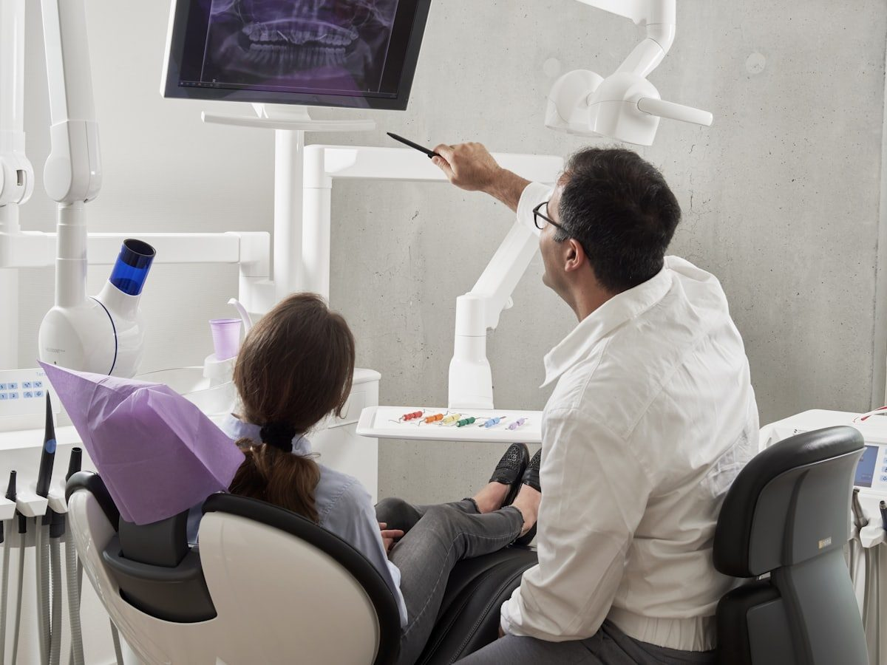

Dale al play. En un par de minutos entenderás por qué en Ocean Clinik no empezamos por el precio, sino por tu diagnóstico. Y por qué eso te interesa.

Perder una pieza dental no afecta solo a la sonrisa.
También puede cambiar la forma de masticar, hacer que otras piezas se desplacen y afectar a tu seguridad al hablar o sonreír. Es un problema que muchas veces empieza siendo pequeño y, con el tiempo, condiciona el día a día sin que apenas nos demos cuenta.
No se trata de alarmar, sino de ser realistas. Cuando un problema dental se retrasa, muchas veces el tratamiento posterior puede ser más complejo, porque pueden aparecer cambios en el hueso, en la mordida o en las piezas vecinas.
“Valorar tu caso a tiempo te da más opciones y una decisión más tranquila.”
Por eso el primer paso siempre es el mismo: entender bien tu situación antes de plantear cualquier tratamiento.

Cada caso se estudia de forma individual. El Dr. Claudio Vázquez, al frente de la dirección clínica, y su equipo valoran tu situación, planifican el tratamiento con criterio clínico y te explican las opciones con claridad, acompañándote durante todo el proceso.
* Sustituye esta foto y este texto por la fotografía y la biografía reales del Dr. Claudio Vázquez.
Estudiamos tu caso y escuchamos qué te preocupa y qué esperas conseguir.
Diseñamos un plan adaptado a tu situación, explicado con claridad.
Realizamos el tratamiento y te acompañamos durante todo el proceso.
Explicarte tu caso con claridad, recomendarte solo lo que tenga sentido clínico y resolver tus dudas antes de empezar. Sin promesas absolutas: información honesta para que decidas con tranquilidad.
¿Prefieres que te lo cuenten otros pacientes?
Ver todas las reseñas en GoogleSolicita tu valoración personalizada y descubre, según diagnóstico, qué opciones encajan mejor con tu caso.
Solicitar valoración